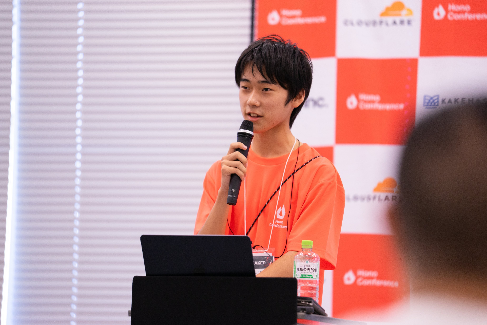
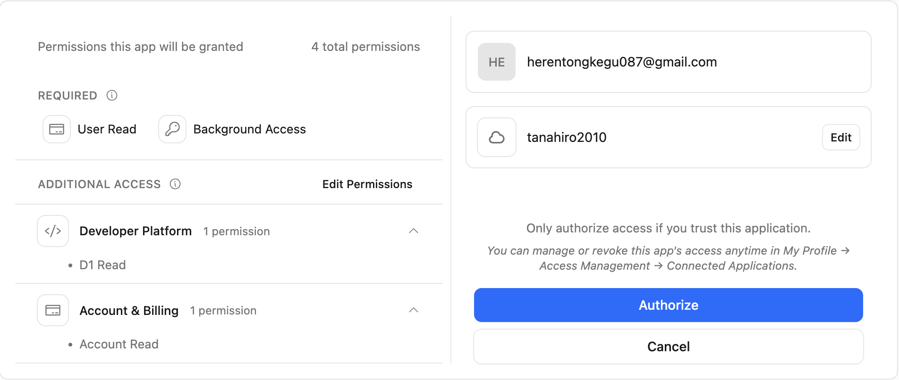

田中博悠 / tanahiro2010

発端
2026年10月19日
Cloudflare API MCP Server が
Step-up Authorization に対応
Cloudflare Changelog
最小の権限で繋いで
足りなくなったら、足せる
で、読んでて思ったんですけど
問い
include_granted_scopes=true
Google OAuth
これ、昔からありますよね
何が違うんだ？
仕様を読んで
自分でクライアントを書いて
128回 叩きました
HTTP往復・全部ログに残してあります
前提
Cloudflare の MCP サーバーは
scopes_supported を 2 箇所で公開している
| RFC | 意味 | |
|---|---|---|
| Protected Resource | 9728 | 最低限いるもの |
| Authorization Server | 8414 | 発行しうる全部 |
数えてみました
2 : 384
HTTP/2 401
www-authenticate: Bearer realm="OAuth",
resource_metadata="...",
scope="user:read account:read"2個で始められる
足りなくなったら足せる前提があるときだけ
仕様
発火点は
403 insufficient_scope
HTTP/1.1 403 Forbidden
WWW-Authenticate: Bearer
error="insufficient_scope",
scope="files:write",
resource_metadata="..."このエラーコード
MCPの発明じゃない
RFC 6750 §3.1
2012年
OAuth Bearer Token Usage
MCPが足したのは
そこから再認可に繋ぐ手順
WWW-Authenticate を読む3 は普通の OAuth 認可コードフロー
ここまでで、違いが3つ見えます
| MCP | ||
|---|---|---|
| 気づくのは | アプリ | サーバー |
| 伝える手段 | 不要 | WWW-Authenticate |
| 覚えてるのは | 認可サーバー | クライアント |
| 再認可 | 認可コードフロー | 同じ |
3行目
これ、読んだだけじゃ決まらない
歴史
その前に、ひとつ
新機能じゃなかった
| 仕様 | |
|---|---|
| 2025-06-18 以前 | 記述なし |
| 2025-11-25 | 登場 |
| 2026-07-28 | 現行 |
Cloudflare がリンクしてるのは 2026-07-28
じゃあ 2026-07-28 で何が変わった？
| 仕様 | 誰が |
|---|---|
| 2025-11-25 | サーバー |
| 2026-07-28 | クライアント |
責務がひっくり返った
SEP-2350 / 2026-03-28 merged
なぜ？
This contradicts the RFC,
creates an **impossible requirement
for stateless servers**,
and leads to **infinite
re-authorization loops** in practice.
無限ループ
initialize は init が要るtools/list は mcp:tools:read が要る403 が「その操作に必要なScope」だけ返す
クライアントが _scope を上書きする
tools/list → 403 → init を失う
initialize → 403 → tools:read を失う
tools/list → 403 → init を失う
⋮検証
公式SDKを使いませんでした
@modelcontextprotocol/clientfunction computeScopeUnion(...scopes) {
const seen = new Set()
for (const scope of scopes) {
for (const t of scope.split(/\s+/)) seen.add(t)
}
return [...seen].join(' ')
}403 を見たら自動で和集合にする
正しい実装です
でも、これだと
和集合を作らない再認可
が投げられない
400 も 403 も観測結果なので
"access_token": {
"_redacted_len": 82,
"_sha256_16": "184d68d85f68caab"
}まず最小Scopeで繋いで
普通に動くことを確認してから
403 を踏みに行く
403
踏めました
HTTP/2 403
WWW-Authenticate: Bearer realm="OAuth",
error="insufficient_scope",
scope="user:read account:read workers-r2.read",
error_description="This operation needs
the workers-r2.read scope"scope に注目
baseline が入ってる
| 403 の scope に何を入れる | |
|---|---|
| MCP 仕様 | 必要なものだけでいい |
| Cloudflare docs | baseline込みで全部 |
| 実機 | 後者 |
本題
誰が覚えているのか
d1.read だけ要求してみる
持ってた3つは、あえて落とす
要求 : d1.read
要求 : d1.read
付与 : d1.read user:read offline_access account:read残ってる
認可サーバーが保持してる
…と書きかけました
敗因
対照が無い
2 は自分で混ぜ込んだ交絡
過去の付与ゼロのクライアントを作って
同じ画面を出してみる
完全に同じ
判定を取り下げました
測り直し
baseline じゃない d1.read を持った状態で
workers-r2.read だけ要求する
これなら既定値では説明がつかない
D1 Read が無い
直前に付与したばかりなのに
要求 : workers-r2.read
付与 : workers-r2.read user:read offline_access account:readd1.read が消えた
文字列だけじゃ足りないので
実際に叩いてみる
D1一覧 → 403
能力ごと失われている
わかったこと
Cloudflare の認可サーバーは
過去の付与を引き継がない
"Scopes you already granted are kept"
が成立するのは
クライアントが和集合を作ってるから
ところが
チャレンジの中身を、よく見ると
| 持ってたScope | チャレンジの scope |
|---|---|
| baseline | … workers-r2.read |
| baseline + r2 | … workers-r2.read d1.read |
| baseline + r2 | … workers-r2.read kv…read |
baseline 固定じゃない
トークンの中身に追随してる
challenge.scope =
トークンの付与Scope
∪ その操作に必要なScopeこれ、どこかで見ました
2025-11-25 のやり方
2026-07-28 が削除した方
効果があります
sdk@1.32.1 の403ハンドラif (error === 'insufficient_scope') {
if (scope) {
this._scope = scope // 上書き
}さっきのループ条件そのもの
それでも落ちない
サーバーが肩代わりしてるから
ゾーン
総当たりしてて、気づいたんですけど
403 が返らない操作がある
GET /zones
→ 200 result: []0件？
本当に無いのか
権限で消えてるのか
区別できない
zone.read を付けて、もう一回
| Scope無し | 付与後 | |
|---|---|---|
| ゾーン一覧 | 0件 | 3件 |
| Workers一覧 | 0件 | 12件 |
あった
403 が返らないので
クライアントは「足りない」を知らない
ユーザーに聞きにいく機会も、発生しない
AIは「ゾーンはありません」と答える
| 操作 | 権限が無いと |
|---|---|
| R2 / KV / D1 | 403 + チャレンジ |
| zones / workers | 200 + 空配列 |
/user/tokens | 文字列で403 |
step-up できるのは1行目だけ
refresh
追加認可って、必ずブラウザに戻りますよね
なんで refresh じゃダメなの？
RFC 6749 §6
広げられない
| 要求 | HTTP | 付与 |
|---|---|---|
| 省略（対照） | 200 | 元のまま |
| 広げる | 200 | 元のまま |
| 狭める | 200 | 元のまま |
広げられないのは仕様どおり
でも、狭めるのも無視される
docs には「狭められる」と書いてある
workers-oauth-provider
private downscope(requested, allowed) {
if (!requested) return allowed
return requested.filter(s => allowed.includes(s))
}ライブラリは正しい
違うのは hosted の方
まとめ
WWW-Authenticate再認可そのものは同じOAuth
Step-up は OAuth の代替じゃない
OAuth への入口
なんでMCPだけこの形？
従来のWebアプリ
開発者がどのScopeが要るか知ってる
MCP
AIがツールを選ぶ
execute() は呼ぶまで分からない
クライアントには事前に判断できない
だから「気づく」をサーバーに移した
そのための経路が、Step-up
そして
経路は、まだ全部つながってない
黙って空を返さない
おまけ
対照に投げたデタラメな文字列が
403 insufficient_scope
一度も発行されてないのに
39文字 → 401 invalid_token
40文字 → 403 insufficient_scope[A-Za-z0-9_-] のとき
丸い数字が出たら実装定数
失効したトークンでも起きる？
| revoke 済み | 401 ✅ |
| 別リソースのトークン | 401 ✅ |
| 壊れた文字列 | 401 ✅ |
全部ハズレ
実クライアントの状態からは到達しない
田中博悠 / tanahiro2010
https://blog.tanahiro2010.com